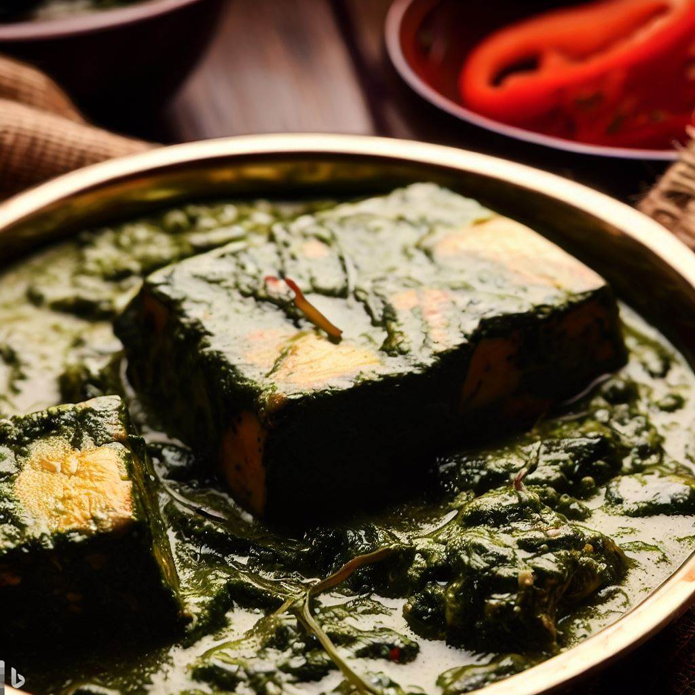

Palak Paneer

Description
A popular vegetarian dish made with spinach and paneer (Indian cheese) in a creamy and flavorful gravy.
Ingredients
- 200g paneer, cut into cubes
- 500g fresh spinach, washed and chopped
- 2 tablespoons oil
- 1 onion, chopped
- 2 garlic cloves, minced
- 1 tablespoon ginger, grated
- 1 teaspoon cumin seeds
- 1 teaspoon coriander powder
- 1/2 teaspoon turmeric powder
- 1/2 teaspoon garam masala
- 1/4 teaspoon cayenne pepper
- 1/2 cup heavy cream
- Salt to taste
Steps
- Blanch the chopped spinach in boiling water for 2-3 minutes. Drain and puree in a blender until smooth.
- Heat oil in a large pan over medium heat. Add the cumin seeds and fry until fragrant.
- Add the chopped onion, minced garlic, and grated ginger. Cook until the onion is soft and translucent.
- Add the coriander powder, turmeric powder, garam masala, and cayenne pepper. Cook for a minute.
- Add the spinach puree and cook for 5 minutes.
- Add the cubed paneer and heavy cream. Simmer for another 5-10 minutes or until the paneer is heated through and coated in the sauce.
- Add salt to taste and serve hot with naan or rice.
Return to Homepage